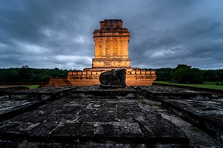
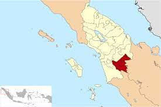
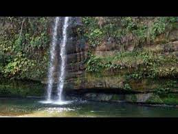
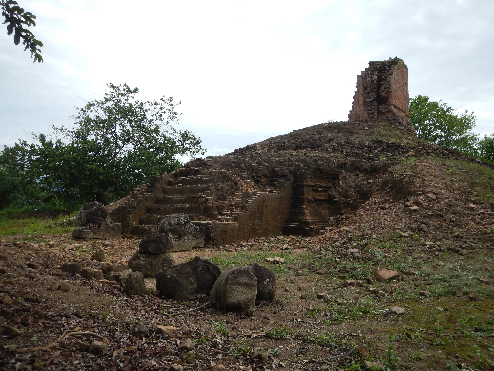

Topologi dan Klimatologi
Secara umum Kabupaten Padang Lawas memiliki iklim tropis dengan suhu
rata-rata antara 14-36 °C. Berdasarkan ketinggian wilayahnya,
Kabupaten Padang Lawas berada pada ketinggian (altitude) 915m di
atas permukaan laut (dpl). Pada tahun 2007, Kabupaten Padang Lawas
memiliki rata-rata curah hujan 167 mm/tahun dengan rata-rata curah
hujan 167 mm/bulan.
Curah hujan di Kabupaten Padang Lawas dalam kurun waktu 5 (lima)
tahun terakhir (2003-2007), yaitu curah hujan tertinggi terjadipada
tahun 2006 yaitu 2.014 mm/tahun dengan rata-rata curah hujan 168
mm/bulan. Sementara curah hujan yang terendah terdapat pada tahun
2004 yaitu 1.865 mm/tahun dengan rata-rata curah hujan 155 mm/bulan.

Sejarah
Kabupaten Padang Lawas adalah salah satu kabupaten yang berada di
Provinsi Sumatra Utara, Indonesia. Kabupaten ini adalah hasil
pemekaran dari Kabupaten Tapanuli Selatan. Kabupaten Padang Lawas
resmi berdiri berdasarkan Undang-Undang Republik Indonesia Nomor: 38
Tahun 2007, tepatnya pada tanggal 10 Agustus 2007, bersamaan dengan
dibentuknya Kabupaten Padang Lawas Utara, menyusul RUU yang
disetujui pada 17 Juli 2007. Ibu kota kabupaten ini adalah Sibuhuan.
Kepala daerah yang pertama kali memimpin di Kabupaten Padang Lawas
adalah Ir. Soripada Harahap, sebagai penjabat bupati.

Wisata
Air Terjun Sipatabung

Batang Lubu Sutam.Metro Sumut Suguhan hutan alami dipadu dengan
air jernih yang masih bersih membuat keberadaan air terjun
Sipatabung di Desa Pinarik Kecamatan Batang Lubu Sutam Kabupaten
Palas pantas dijadikan wisata alam terbuka. Berbagai macam
tantangan alam di lokasi air terjun ini cukup menjanjikan bagi
pecinta adventure. Terlebih bagi mereka yang suka tantangan
outdoor dan outbound.
Biara Sangkilon

Runtuhan bangunan yang terletak di tengah-tengah lahan kelapa
sawit tersebut terlihat merana karena termakan usia dan cuaca.
Beberapa lembar lumut hijau dan rumput tampak menyelimuti tubuh
bangunan tersebut. Sebuah monumen yang terletak di Desa Sangkilon,
Kecamatan Lubuk Barumun yang tidak utuh lagi, seolah menjadi saksi
bisu yang merekam aktivitas masyarakat Padang Lawas pada masa
lampau. Pada sisi lain, bangunan yang mendapat julukan “temple in
the jungle” oleh para peneliti Belanda di sekitar tahun 1930-an
itu juga menyisakan jejak aktivitas modern yang ternyata “salah
kaprah” terhadap pengertian harta karun terpendam. Sebuah lubang
besar sedalam 3 meter, sepanjang 5 meter, dan selebar 2 meter pada
tubuh bangunan sisi selatan menjadi bukti kerakusan oknum yang
haus akan harta masa lampau. Monumen tersebut digali secara liar
sekitar tahun 2000-an, yang menyebabkan bangunan tersebut
mengalami kerusakan yang cukup parah. “Waktu menggalinya orang itu
kami tidak tahu,” ungkap Pak Ali selaku juru pelihara biara. “Ada
laporan dari penggarap sawit tentang penggalian liar itu, trus
kami ke lokasi, ternyata udah ada lubang besar di situ,” lanjutnya
seraya menunjuk ke arah lubang bekas galian liar.